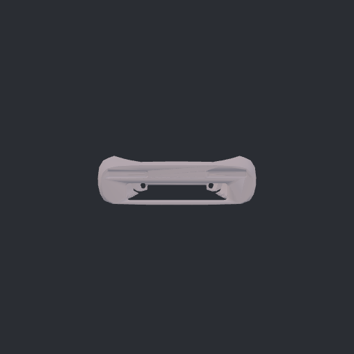
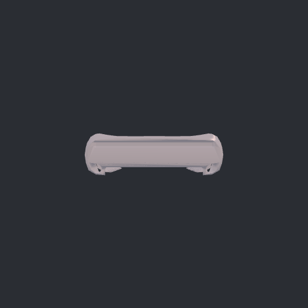
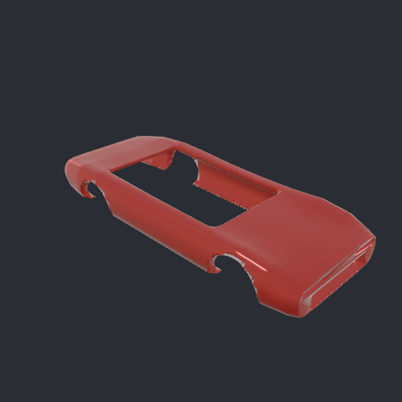
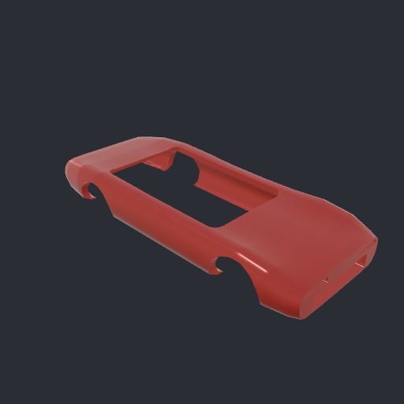
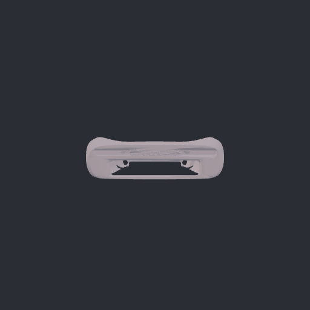
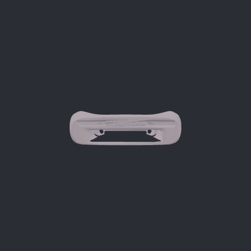
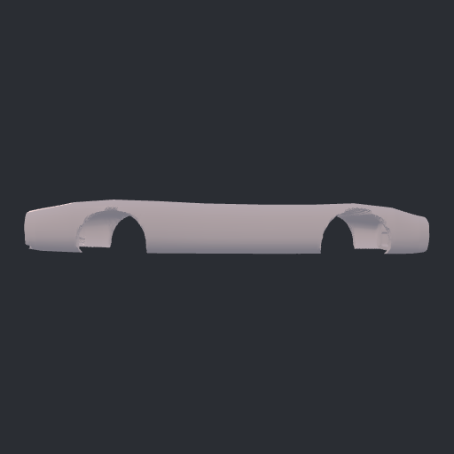
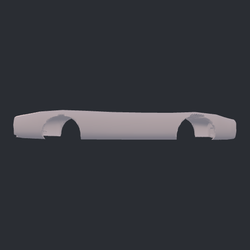
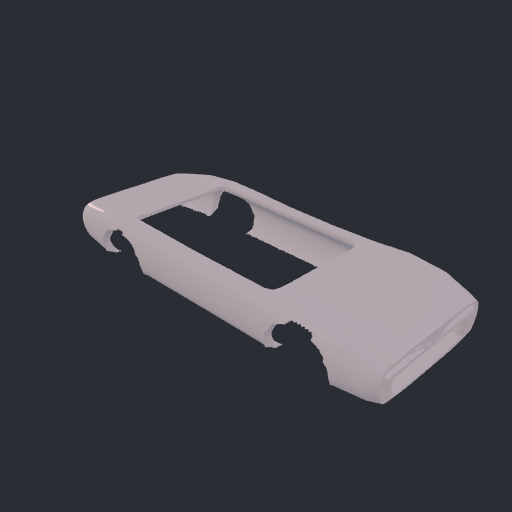
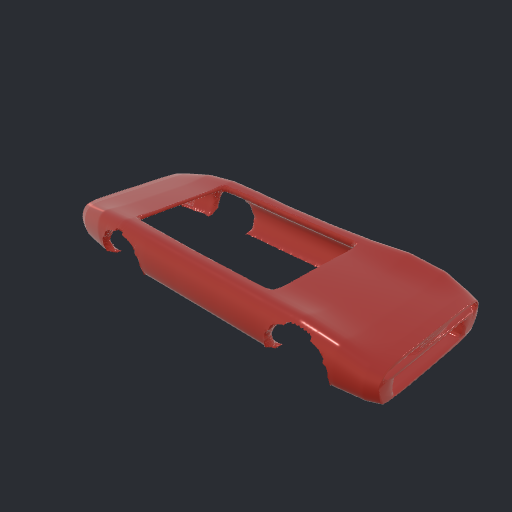

Left: milestone base 6877349. Right: final-result crease policy, 60° default. Identical procedural source, triangles, camera metadata and neutral/presentation rendering. This demonstrates a shading fix, not a model-quality evaluation.




Left: level 1. Right: level 2. Cutouts remain open; Loop subdivision smooths and shrinks features. Numeric tests enforce finite, convexly bounded positions and the same GLB surface contract.





